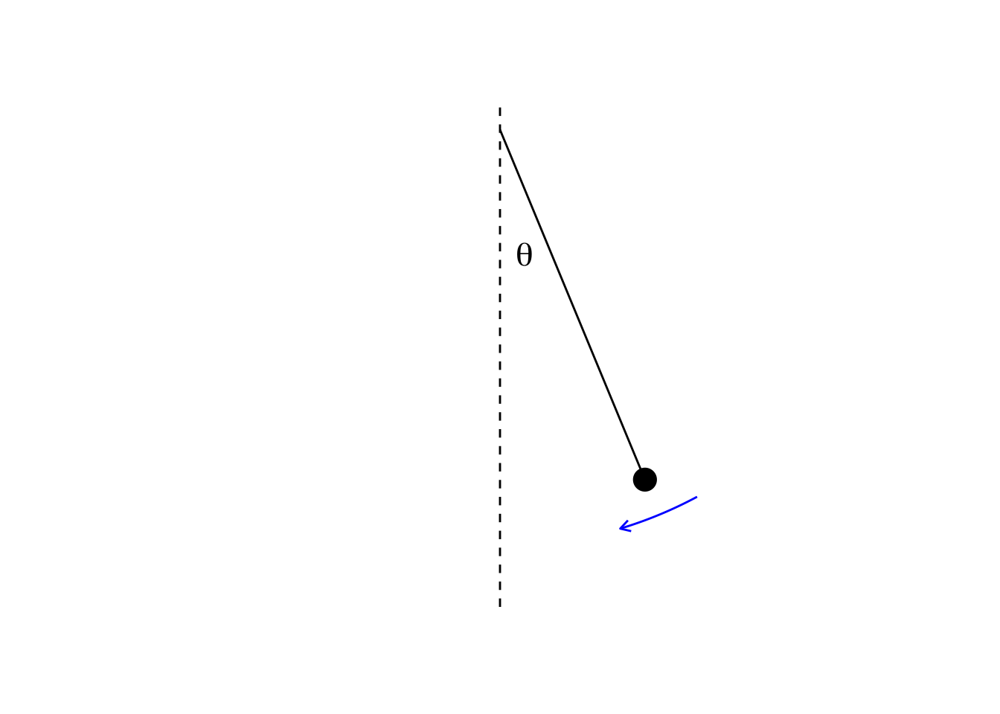
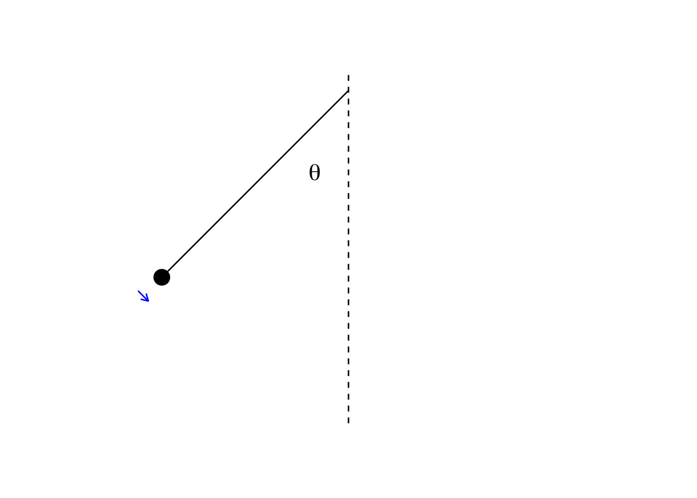
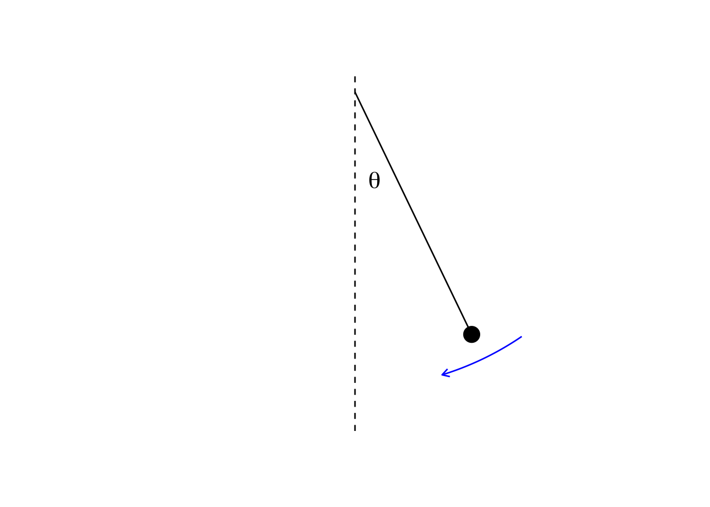
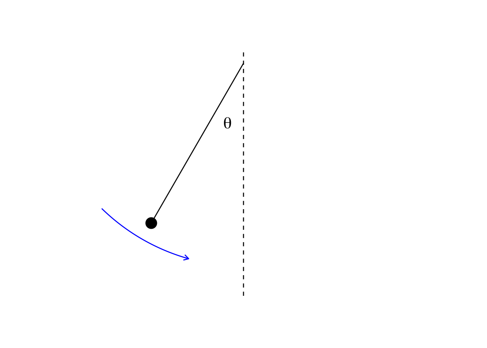
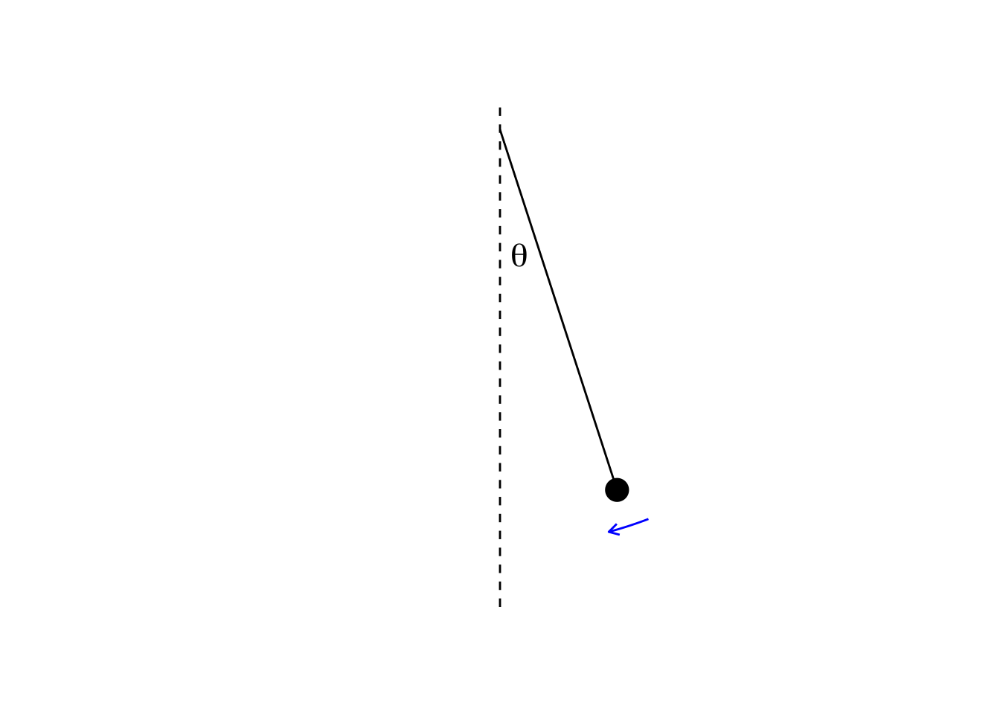
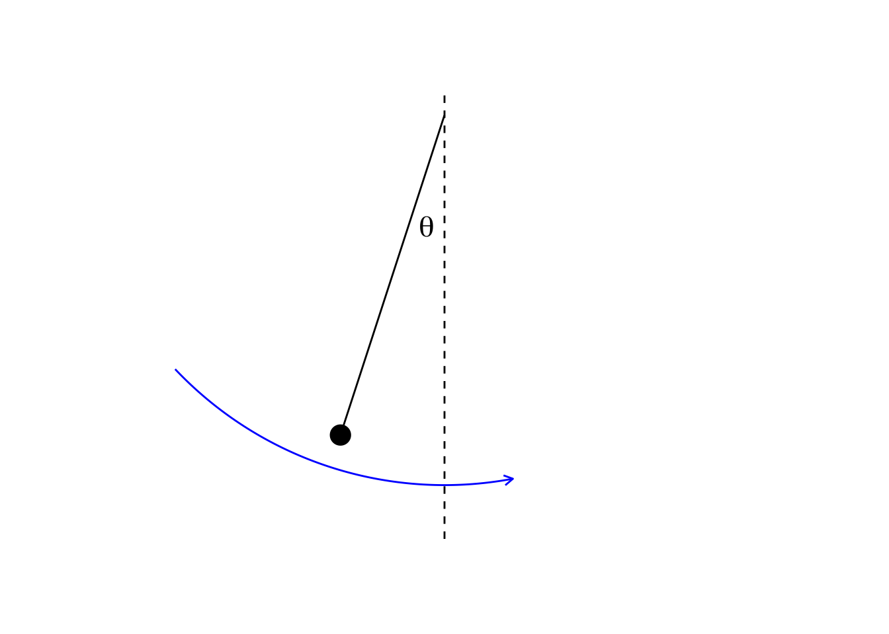
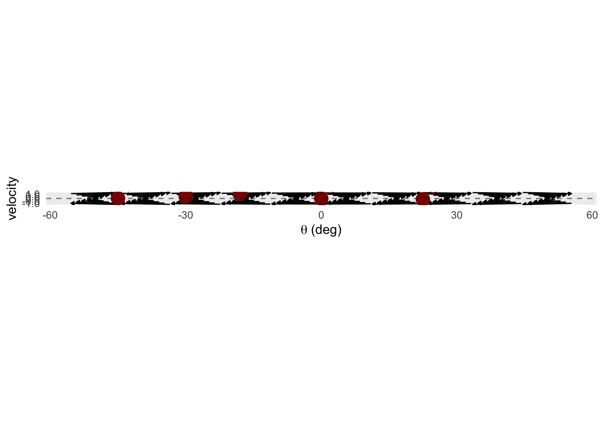
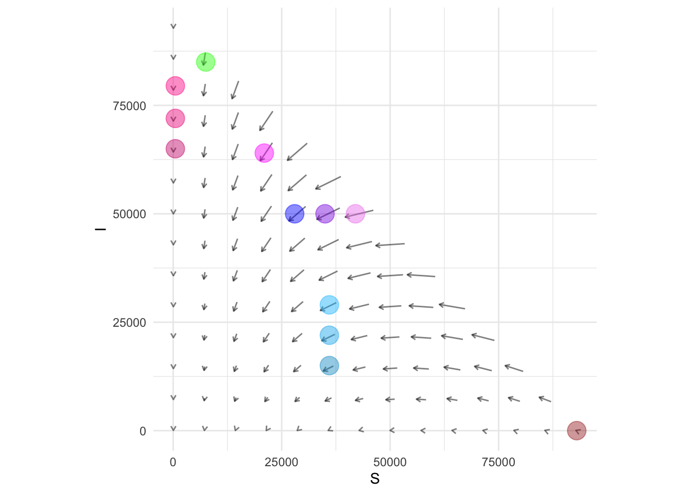
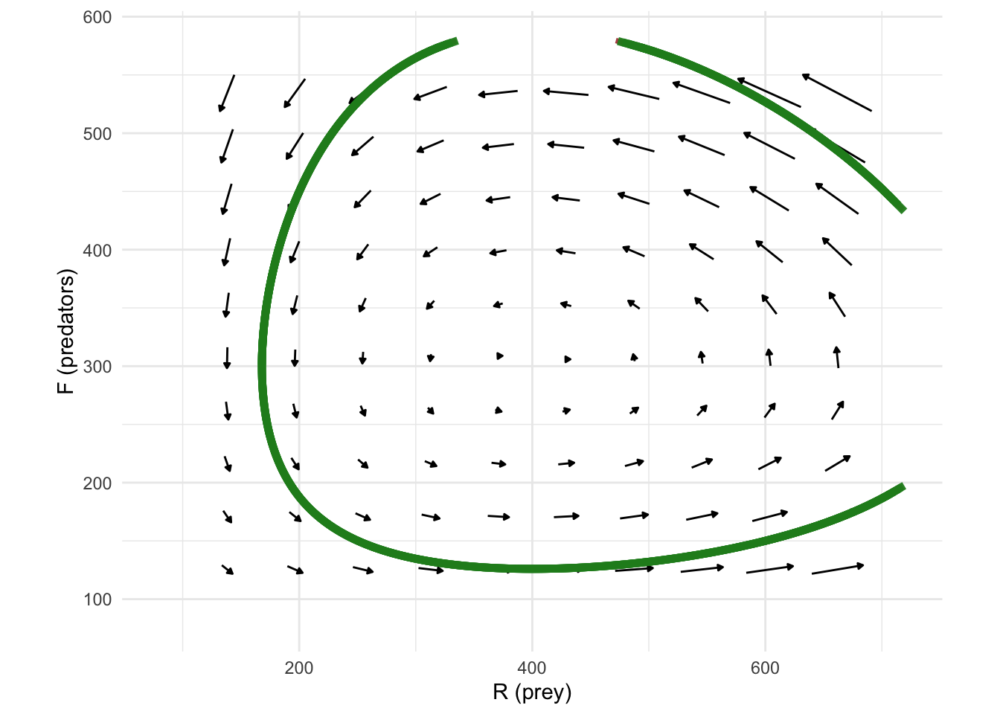

QR-I Assignment 7
Chapter 11 of the QR-A book
WarningRemember to hand in your work …
At any point, you can submit your answers by collecting them and uploading them to the class site.
No answers yet collected
If requested by your instructor, please identify here the people from whom you received assistance on this assignment.
If the answers that have been loaded automatically are not yours, press this button before starting your work:
NoteDrill for Chapter 11 (Dynamics)
Open drill questions in this document
Remember to submit your drill answers through that document. But for the exercises in the present document, use the “collect answers” at the top of this page.
NoteChapter 11 — Exercises
These exercises draw on dynamics (Ch 11): state space, flow fields, and the SIR model.
Exercise 1 Note: In this exercise, \(\theta = 0°\) is the position where the pendulum hangs straight down. Positive \(\theta\) is one side, negative \(\theta\) the other.
The figure below shows six different instantaneous configurations for a pendulum as it swings. Each panel is labeled (a)–(f). The curved arrow in each panel shows the velocity of the bob; the length of the arrow is proportional to the speed (velocity × 1 second). In state space, the horizontal axis is \(\theta\) (angle in degrees); the vertical axis is angular velocity.






1. Which frame shows the pendulum where it is nearest the top of its swing?
bsa-topmost
2. The next figure shows the flow field (dynamical rule) for the pendulum in state space: each arrow shows the direction the state moves from that point (\(\theta\) on the horizontal axis, velocity on the vertical). 0° = straight down. Numbered points 1–5 are marked; some match one of the pendulum frames (a)–(f), at least one does not. Use the flow and the pendulum panels to locate each state.

2a. Which numbered point (1–5) corresponds to frame b?
bsa-match-b
2b. Which numbered point corresponds to frame f?
bsa-match-f
2c. Which numbered point does not correspond to any of the six pendulum frames (a)–(f)?
bsa-distractor
TipWhy is 4 correct?
Point 4 is at (0, 0): straight down at rest. None of the six pendulum panels show that state.
2d. Which numbered point corresponds to frame a?
bsa-match-a
Exercise 2 Recall that in the Models chapter (SIR), the SIR model had two parameters: the social distance between people and the fraction of infectives who isolate. The dynamical rule shown in Figure 11.2 (SIR state space) is drawn for a social distance of 20 and an isolation fraction of 10%.
One of the flow fields in Figure 3 is for a different social distance than in that textbook figure. The other is for a different isolation fraction. Identify which flow is for each changed parameter and say whether the parameter was raised or lowered. (Note: Both might be lowered, or both might be raised, or one lowered and one raised. You have to figure it out!)

Exercise 3 Referring to Figure 11.2 (SIR state space), three nearby points in state space, marked  , have mainly a westward flow. But only the middle dot is purely westward, the neighboring positions have flows that are a little bit inclined to the north or south. Explain what it is about the mechanics of the epidemic that leads to the north or south component of the flows.
, have mainly a westward flow. But only the middle dot is purely westward, the neighboring positions have flows that are a little bit inclined to the north or south. Explain what it is about the mechanics of the epidemic that leads to the north or south component of the flows.
Exercise 4 Predator–prey
State \((R, F)\): prey and predator populations. The flow field shows how the state changes; trajectories can cycle around an equilibrium. The figure shows the flow and one trajectory (green).

Questions
- Where there are many prey and few predators (high \(R\), low \(F\)), which way does the flow mainly point?
leh-highR-lowF
- Where there are few prey and many predators (low \(R\), high \(F\)), which way does the flow mainly point?
leh-lowR-highF
- How does long-term behavior here differ from SIR?
leh-vs-SIR
- When would the cycle break (populations no longer follow a repeating cycle)?
leh-cycle-break
- At the rightmost point of the green trajectory (where \(R\) is largest on the loop), in which direction does the flow point?
leh-rightmost-flow
- Why does the flow point roughly southwest when there are few prey and many predators?
:::::